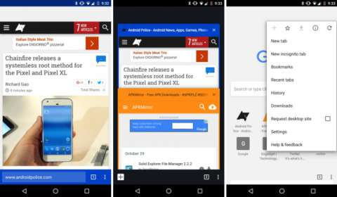

В Chrome для Android поисковую строку можно перенести в нижнюю часть экрана
Поскольку в последнее время на рынок редко выходят смартфоны с диагональю экрана пять и менее дюймов, то у многих возникают проблемы с использованием устройств одной рукой. Многие разработчики не спешат оптимизировать свои приложения под большие экраны, поэтому зачастую все элементы управления находятся в верхней части экрана. В Google пошли навстречу пользователям и сместили поисковую строку браузера Chrome вниз. На данный момент такая функция доступна только в Chrome Beta и Chrome Canary.

Чтобы перенести поисковую строку в нижнюю область экрана, необходимо зайти в chrome://flags и активировать пункт "#enable-chrome-home". После этого браузер перезагрузится с уже изменённым положением строки. На данный момент работа над функцией ещё не завершена, так как при её включении в верхней части экрана остаётся пустое пространство. Вероятно, в будущих версиях браузера разработчики Google исправят этот недостаток.